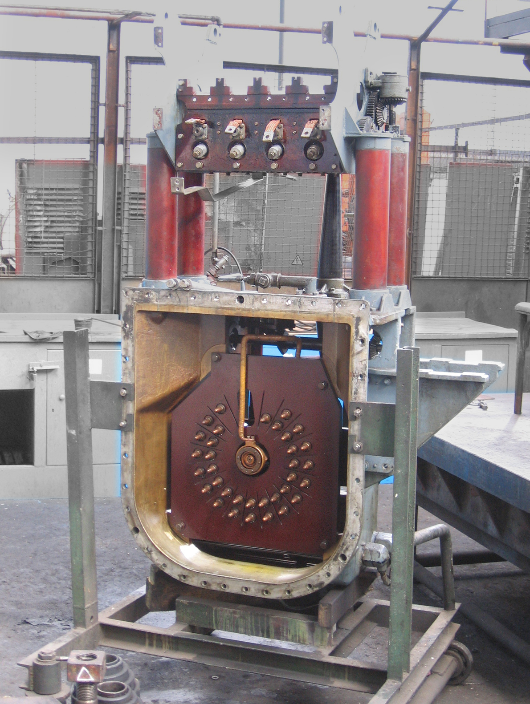
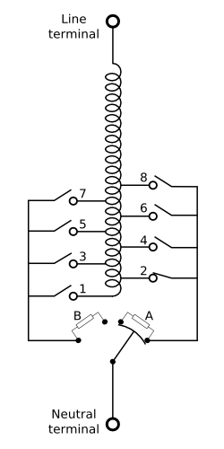

Jonas Kersulis
January 25, 2017
This is a tap changer.
It can vary the transformer turns ratio online.
Problem: Weather fluctuations not known.
So LTCs still play a crucial role.
Unfortunately, they are
Ibid.
Ibid.
Continuous signal, discrete device. We need
Details later.
Tap-changer failure most likely cause of medium-voltage transformer failure. Source
Consider this simple network.
Wait, what's a DLTC? Where do time constants come from?
Consider two LTC models:
Ideas:
Lots of work in this area at University of Queensland.
Common objectives:
Common constraints:
Hybrid dynamics. Heuristics and assumptions everywhere!
Agalgaonkar et al.: Day-ahead LTC and PV control.
Issues and assumptions
Park et al.: Day-ahead STATCOM dispatch
Issues and assumptions
Rationale:
Combine
Illustrate
Big idea: explore interaction between LTCs and renewables
Especially impact of renewable voltage regulation on LTC tapping
NREL's Wind Prospector provides simulated power data at 100m, assuming site-appropriate turbine power curves.
Ready for simulation.
Let's first examine extreme cases:
Time to get a bigger picture